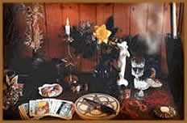

Sempre que possível uma Bruxa deve ter
seu Altar, que de certa forma será sua ligação
com os deuses. Não precisa ser nada complicado ou luxuoso.
Tradicionalmente, ele deve ficar ao Norte, para determinar onde
é o Norte, use uma bússola. Uma vela preta é
colocada a Oeste simbolizando a Deusa, e uma vela branca a Leste
para o Deus. No Altar deve estar o Cálice, o Athame (punhal),
o Pentagrama, a Varinha e outros objetos utilizados nos rituais.
Também é comum se colocarem símbolos
para os Quatro Elementos, como uma pena para o Ar,
uma planta para a Terra, uma vela vermelha ou enxofre para o
Fogo e logicamente, Água para esse mesmo Elemento. Muitas
pessoas colocam um símbolo para a Deusa e o Deus, como
uma concha e um chifre, ou mesmo estátuas e gravuras
dos Deuses. Abuse de sua criatividade, pois o Altar é
o seu espaço pessoal, onde deve ser colocado todo o seu
Amor. Se por algum motivo, você não puder montar
um Altar onde você mora, crie um espaço na sua
imaginação, pois o verdadeiro Templo está
dentro de você, ou vá para a Natureza e faça
dela o mais lindo de todos os Santuários.
Texto extraído
de http://www.wiccarte.com.br